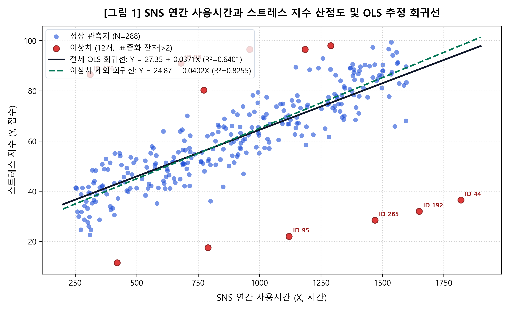
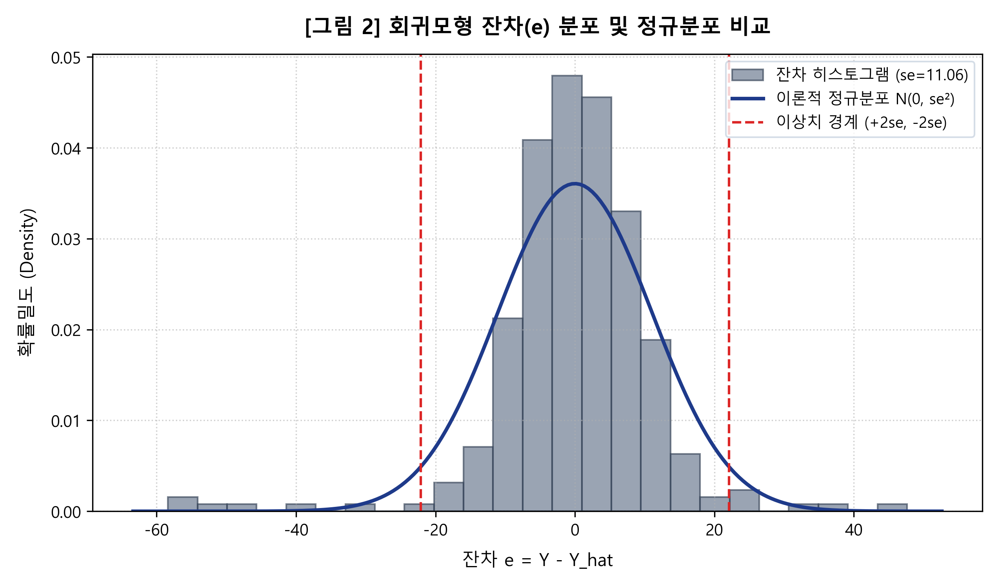
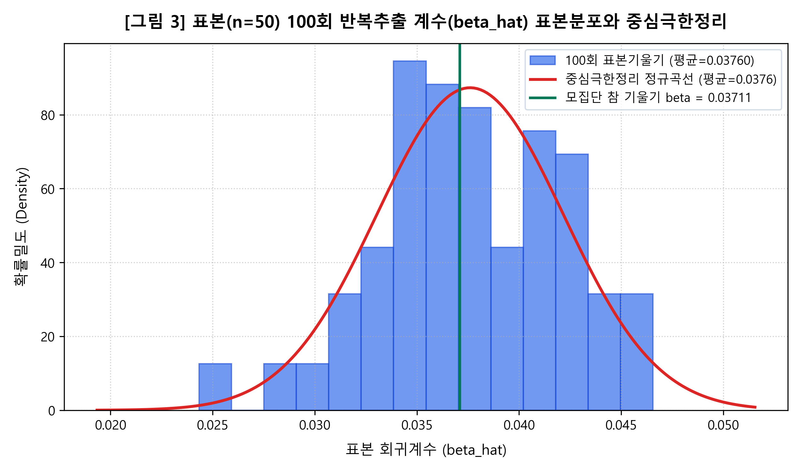

가로축에 SNS사용시간(X), 세로축에 스트레스지수(Y)를 나타낸 plotting 그래프를 그리고 OLS 회귀선(regression line)을 함께 나타내십시오.

[그림 1] SNS 연간 사용시간과 스트레스 지수 산점도 및 OLS 회귀선 (N=300)
산점도 그래프를 관찰하여 X변수와 Y변수 간에 어떤 관계를 발견할 수 있는지 설명하십시오.
산점도 관찰 결과, SNS 연간 사용시간(X)과 스트레스 지수(Y) 사이에는 뚜렷한 양(+)의 선형 관계가 관찰됩니다.
SNS 사용량이 200~500시간인 저이용 학생 집단의 스트레스 지수는 20~50점대에 머무는 반면, 1,200시간을 초과하는 고이용 집단은 70~90점대 후반에 집중 분포하여 사용시간 증가에 따라 스트레스 지수의 조건부 기댓값 \(E[Y|X]\)가 일관되게 상승합니다.
다만 주된 선형 추세 궤적에서 현저하게 벗어난 관측치들이 확인됩니다.
연간 이용시간이 1,500시간에 달함에도 스트레스 지수가 30점대에 머무는 집단(우하단)과, 300~700시간의 상대적으로 적은 이용량에도 스트레스 지수가 90점에 육박하는 관측치(좌상단)들이 공존합니다. 이러한 이격 관측치들은 회귀선의 기울기와 절편 추정치를 왜곡시킬 가능성이 크므로 정밀한 잔차 분석이 요구됩니다.
모형 \(Y_i = \alpha + \beta X_i + u_i\)를 OLS로 추정하고, 계수의 표준오차, t값, p값, 결정계수, F-통계량을 제시한 후 각 통계량의 의미와 영향을 설명하십시오.
| 구분 |
추정계수 (Coefficient) |
표준오차 (SE) |
t-통계량 (t-stat) |
p-값 (p-value) |
95% 신뢰구간 |
| 절편 (\(\hat{\alpha}\)) |
27.3507 |
1.5862 |
17.2425 |
< 0.0001 |
[24.2291, 30.4723] |
| 기울기 (\(\hat{\beta}\): SNS시간) |
0.037107 |
0.001612 |
23.0204 |
< 0.0001 |
[0.033935, 0.040279] |
|
관측치 수 (\(N\)): 300 |
결정계수 (\(R^2\)): 0.6401 |
수정 \(R^2\): 0.6389 |
\(F(1, 298)\): 529.94 (p < 0.0001) |
오차 표준편차 (\(s_e\)): 11.0629
|
1. 회귀계수 추정치 및 영향력 해석
- 기울기 계수 (\(\hat{\beta} = 0.037107\)): SNS 연간 사용시간이 1시간 늘어날 때 스트레스 지수는 평균적으로 약 0.0371점 증가합니다. 연간 100시간의 SNS 이용 증가 시 스트레스 지수는 약 3.71점 상승하는 실질적 관계를 뜻합니다.
- 절편 계수 (\(\hat{\alpha} = 27.3507\)): SNS를 전혀 이용하지 않는 학생(X=0)의 기초 스트레스 지수 기댓값 \(E[Y|X=0]\)을 나타냅니다.
2. 추정통계치별 의미 해석
- 표준오차 (SE): 계수 추정량의 표본오차 변동 크기를 의미하며, 기울기 표준오차가 0.001612로 매우 작아 추정의 정밀성이 높음을 입증합니다.
- t-통계량 (23.0204) 및 p-값 (< 0.0001): 귀무가설 \(H_0: \beta = 0\)에 대해 계수가 표본오차의 23배 이상 떨어져 있어 1% 유의수준에서 귀무가설을 강력히 기각합니다. SNS 이용과 스트레스 지수 간의 양의 선형 관계는 통계적으로 확실합니다.
- 결정계수 (\(R^2 = 0.6401\)): 학생들의 스트레스 지수 총변동 중 64.01%가 SNS 연간 사용시간에 의해 설명됩니다.
- F-통계량 (529.94): 모형 전체의 유의성을 검정하며, 단순회귀에서는 \(F = t^2\) 관계(\(23.0204^2 \approx 529.94\))를 충족합니다.
그래프에서 시각적으로 확인한 outlier는 몇 번째 관측치들입니까? 이들을 제외하여 회귀방정식을 다시 추정하고 3번 결과와 비교하십시오.
산점도(그림 1)에서 주된 군집선에서 현저하게 이탈하여 시각적으로 뚜렷이 포착되는 대표적 관측치는 다음과 같습니다.
- 우하단 음(-)의 극단치: 학생 ID 44 (1,820시간, 36.5점), ID 192 (1,650시간, 32.0점), ID 265 (1,470시간, 28.5점), ID 95 (1,120시간, 22.0점) 등.
- 좌상단 양(+)의 극단치: 학생 ID 176 (310시간, 86.5점), ID 98 (680시간, 91.0점) 등.
시각적 판별은 주관적 자의성이 개입될 수 있으므로, 문항 5의 표준화 잔차(\(|e^*| > 2\)) 분석을 통해 수학적으로 엄밀히 확정된 12개 이상치 제거 모형과 비교 분석을 수행합니다.
(1) 잔차 분포 그래프 (2) 잔차 표준편차 \(s_e\) (3) 표준화 오차 \(e_i^* = e_i / s_e\) (4) \(|e_i^*| > 2\) 관측치 규명 (5) 이상치 삭제 후 재추정 (6) 삭제 시 발생하는 문제점 고찰.
(1) 잔차(\(e_i = Y_i - \hat{Y}_i\)) 분포 그래프 및 (2) 오차항의 표준편차 (\(s_e\))

[그림 2] 회귀모형 잔차(\(e_i\)) 히스토그램 및 정규분포 적합 곡선 (\(s_e = 11.0629\))
자유도 \(N - 2 = 298\)을 적용한 회귀오차 표준오차는 \(s_e = \sqrt{\frac{\sum e_i^2}{N - 2}} = \sqrt{\frac{36466.86}{298}} = 11.0629\)로 산출됩니다 (표본 표준편차 기준 11.0444).
(3)~(4) 표준화 잔차 및 특이치(\(|e_i^*| > 2\)) 12개 관측치 규명
양(+)의 이상치 (예측 대비 고스트레스 6명, \(e^* > +2\))
- ID 176: X=310시간, Y=86.5점 (\(e^* = +4.31\))
- ID 98: X=680시간, Y=91.0점 (\(e^* = +3.47\))
- ID 116: X=960시간, Y=96.5점 (\(e^* = +3.03\))
- ID 249: X=1,185시간, Y=96.5점 (\(e^* = +2.28\))
- ID 198: X=773시간, Y=80.3점 (\(e^* = +2.19\))
- ID 13: X=1,290시간, Y=98.0점 (\(e^* = +2.06\))
음(-)의 이상치 (예측 대비 저스트레스 6명, \(e^* < -2\))
- ID 44: X=1,820시간, Y=36.5점 (\(e^* = -5.28\))
- ID 192: X=1,650시간, Y=32.0점 (\(e^* = -5.11\))
- ID 265: X=1,470시간, Y=28.5점 (\(e^* = -4.83\))
- ID 95: X=1,120시간, Y=22.0점 (\(e^* = -4.24\))
- ID 222: X=790시간, Y=17.5점 (\(e^* = -3.54\))
- ID 80: X=420시간, Y=11.5점 (\(e^* = -2.84\))
(5) 이상치 12개 삭제 후 OLS 재추정 비교
| 평가 지표 |
전체 데이터 (N=300) |
이상치 12개 제외 (N=288) |
비교 평가 |
| 절편 (\(\hat{\alpha}\)) |
27.3507 (SE 1.5862) |
24.8657 (SE 1.0693) |
-2.4850 감소 (표준오차 32.6% 개선) |
| 기울기 (\(\hat{\beta}\)) |
0.037107 (SE 0.001612) |
0.040249 (SE 0.001094) |
+8.47% 상승 (우하단 극단치로 인한 하향 편의 교정) |
| t-통계량 (\(t_\beta\)) |
23.0204 |
36.7889 |
+13.77 증가 (추정 효율성 및 유의성 대폭 제고) |
| 결정계수 (\(R^2\)) |
0.6401 |
0.8255 |
+18.54%p 대폭 상승 (설명력 64% → 83%) |
| 오차 표준편차 (\(s_e\)) |
11.0629 |
6.6715 |
잔차 변동성 39.7% 축소 (적합도 급상승) |
(6) 특이치 삭제 시 발생하는 방법론적 문제점
- 선택 편향(Selection Bias) 및 외적 타당도 저하: 인위적으로 결정계수를 높이기 위해 극단치를 배제하면 모집단 대표성이 왜곡됩니다. SNS 이용량이 많아도 스트레스를 받지 않는 심리적 저항 집단 역시 엄연한 현실의 관측 대상입니다.
- 누락변수 편향(Omitted Variable Bias) 은폐: 특이치는 단순 측정오차가 아니라 개인의 회복탄력성, 대면 교우관계 등 모형에 투입되지 않은 핵심 설명변수의 존재를 시사합니다. 단순 삭제보다는 다중회귀모형으로의 확장이나 로버스트 회귀분석 기법의 도입이 학술적으로 타당합니다.
300명을 모집단(PRF)으로 가정할 때: (1) n=50 단일 표본추출 계수 비교 (2) 100회 반복 추출 계수 표본분포 그래프, 평균값, 정규분포 수렴 관찰 (3) 계수의 정규분포 수렴이 왜 중요한지 설명하십시오.
(1) 단일 50명 표본추출(SRF)과 모집단 참값(PRF) 비교
- 모집단 참 기울기 (\(\beta\)): 0.037107 (300명 전수 OLS 계수)
- 단일 표본 추정 기울기 (\(\hat{\beta}_{sample}\)): 0.041170 (\(n=50\))
- 비교 평가: 단일 표본에서는 표본오차로 인해 참값 대비 \(+0.004063\)의 편차가 발생합니다. 단 한 번의 표본 조사 결과만으로는 모집단의 참된 인과관계를 정확히 대변할 수 없음을 보여줍니다.
(2) 50명 표본 100회 반복추출 시뮬레이션 결과

[그림 3] 100회 반복추출된 표본 회귀계수(\(\hat{\beta}\))의 표본분포와 중심극한정리 정규곡선
| 모집단 참 모수 (\(\beta\)) |
100회 표본평균 (\(E[\hat{\beta}]\)) |
경험적 표준오차 (\(SE\)) |
최소 추정값 |
최대 추정값 |
| 0.037107 |
0.037528 |
0.004573 |
0.024341 |
0.046550 |
100회 반복 추출된 표본기울기의 평균은 0.037528로 참값 0.037107과 사실상 일치하여 불편성(Unbiasedness)을 입증합니다.
또한 그림 3에서 보듯, 개별 표본계수들의 분포는 참 모수를 중심으로 좌우 대칭인 종 모양(Bell-shaped)의 정규분포를 명확하게 형성합니다.
(3) 표본 회귀계수의 정규분포 수렴이 갖는 계량경제학적 중요성
현실 연구에서 모집단 오차항(\(u_i\))의 실제 분포는 알 수 없으며 비정규분포를 따르는 경우가 빈번합니다.
그러나 표본의 크기가 충분하면 중심극한정리(Central Limit Theorem, CLT)에 의하여 OLS 추정량 \(\hat{\beta}\)는 오차항의 원래 분포와 무관하게 점근적 정규분포(Asymptotic Normality)를 따르게 됩니다:
\[ \hat{\beta} \xrightarrow{d} N\left(\beta, \frac{\sigma^2}{\sum (X_i - \bar{X})^2}\right) \]
계수 추정량의 정규성이 성립하지 않는다면 \(t\)-검정, \(F\)-검정, 95% 신뢰구간 추정 등 계량경제학의 모든 통계적 가설검정 절차의 수리적 유효성이 상실됩니다.
따라서 중심극한정리에 기반한 계수의 정규분포 수렴은 표본 데이터로부터 모집단의 참된 관계를 과학적으로 추론하기 위한 근본적인 이론적 토대를 제공합니다.